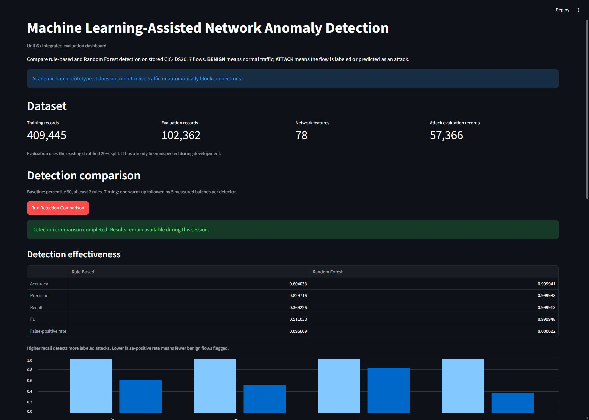
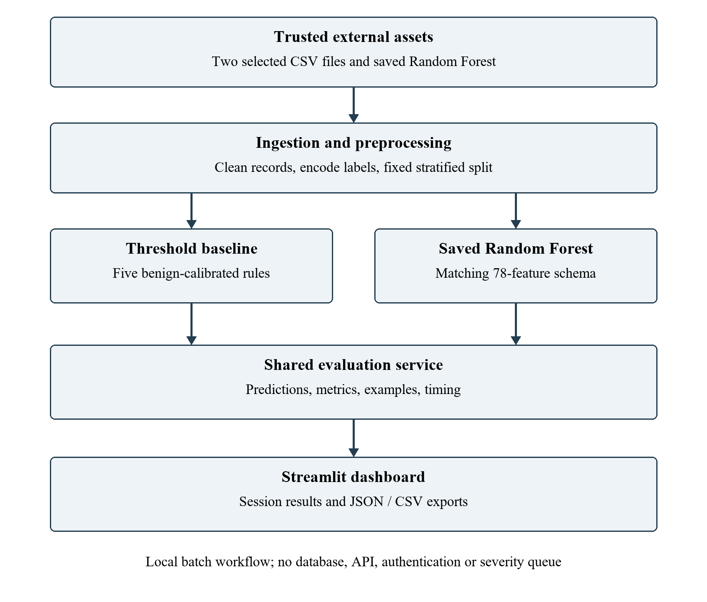

MSIT CAPSTONE / PROJECT CASE STUDY
Making network anomalies
visible and measurable.
Machine Learning Assisted Network Anomaly Detection
I built a Python and Streamlit prototype that compares a transparent rule baseline with a Random Forest classifier on stored network flow records. The project connects algorithm implementation, honest evaluation, automated testing, and reproducible deployment.
Academic batch-analysis prototype · Local Docker deployment verified
01 / THE PROBLEM
Detection needs evidence,
not just a score.
Network administrators need a way to inspect suspicious traffic and compare detection approaches. This project explores whether a learned classifier can improve detection over simple thresholds while exposing false positives, missed attacks, and reproducible outputs.
The interface supports model comparison, confusion matrices, example records, and CSV/JSON exports. It processes existing flow records; it does not capture live traffic or automatically block connections.
02 / MEASURED RESULTS
A controlled comparison.
A clearly bounded conclusion.
Evaluation used 102,362 records from the CICIDS2017 Friday PortScan and DDoS files, with a stratified 80/20 split and 78 input features.
| Metric | Rule baseline | Random Forest |
|---|---|---|
| Precision | 82.9716% | 99.9983% |
| Recall | 36.9226% | 99.9913% |
| F1 score | 0.511038 | 0.999948 |
| False positives | 4,347 | 1 |
| Missed attacks | 36,185 | 5 |

03 / IMPLEMENTATION & RELIABILITY
One integrated workflow.
The Streamlit interface calls shared Python ingestion, preprocessing, prediction, and evaluation modules. Schema checks validate feature names and ordering. Session state keeps comparison results visible after downloads.
Transparent baseline
Five traffic features use thresholds calibrated on benign training records. A record is flagged when at least two features strictly exceed their thresholds. The classifier comparison uses a 100-tree Random Forest.
Testing that changed the implementation
Negative tests exposed unhandled empty, truncated, and non-predictor model files. Improved exception handling and a callable prediction check now provide controlled errors. This validation does not make untrusted serialized models safe to load.
The final Windows suite passed 62 tests. A separate Linux container run passed 55 overlapping, dataset-independent tests; these are not 117 unique tests. Unit 5 also recorded a successful hosted GitHub Actions run.


Reproducible local deployment
The Docker image packages the application and dependencies. Dataset and model files are mounted read-only and configured through environment variables. Local browser checks covered comparison, exports, clearing results, and a fresh comparison after restart.
Known boundaries: no authentication, durable audit database, TLS termination, live packet capture, or production deployment. The HTTP health check establishes liveness; missing model or data files can still prevent analysis.
04 / PROJECT ARTIFACTS
Inspect the work.
Selected materials for a quick technical review. The portfolio is a case study, not an online inference service.
Evaluation metrics ↗
Download the actual exported comparison metrics as CSV.
02 / DESIGNImplemented architecture ↗
Inspect the integrated module flow and result exports.
03 / DEMONSTRATION
Working prototype ↗
View a screenshot of the application running locally in Docker.
04 / DOCUMENTATIONProject brief ↗
Download the implementation summary, evidence, and limitations.
Source repository
GitHub: ml-network-anomaly-detection ↗
This repository is private. The source link requires authorized collaborator access; the portfolio's selected artifacts can be reviewed separately.
WHAT THIS PROJECT DEMONSTRATES
From an algorithm
to an inspectable system.
Modular Python development · Classification evaluation · Test-driven fixes · Version control and CI · Container deployment · Technical communication
Next improvements: reconstruct training provenance, evaluate an untouched external dataset, conduct independent usability testing, and strengthen operational security before any production use.